Fall 2026–2027
| Student | Student ID |
|---|---|
| Mohammed Bendardf | 229912053 |
| Abdalraouf Alkabir | 2309015482 |
Submission deadline: 20 November 2026, 17:00 (Istanbul, UTC+3)
Deliverables: notebook.ipynb (executed), report/report.pdf, figures/, tables/
Contents: Executive summary · 1 Introduction · 2 Data · 3 Methodology · 4 Task 1: cross-validation · 5 Task 2: feature selection · 6 Task 3: PCA · 7 Task 4: K-Means · 8 Task 5: trees and ensembles · 9 Challenges · 10 Reused results and verification · 11 Conclusions · Appendix A: additional analyses · A.5 Robustness checks · References
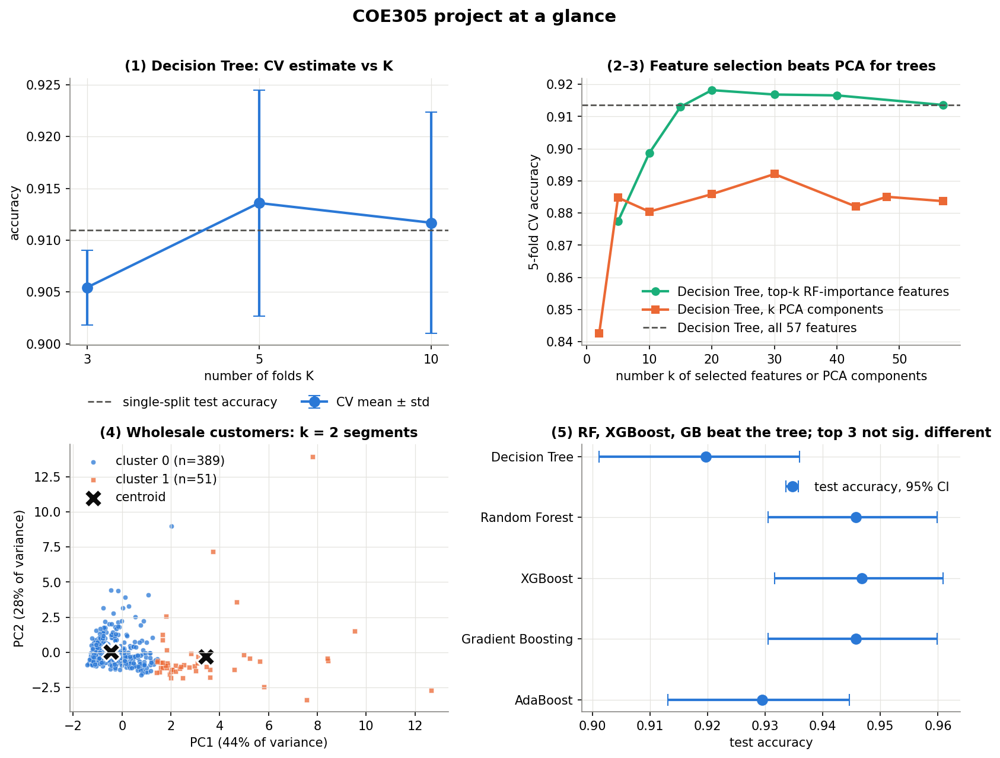
Figure 0 — The project at a glance (figures/x5_overview.png; panels re-plot Tasks 1–5 and Appendix A.1). Panel 1: one CV run per K (± fold std); the summary averages 10 reshuffles (Table 3). In panels 2 and 4, series and segments differ by colour and marker shape. Panel 5: test accuracy with 95% paired-bootstrap confidence intervals (RF = Random Forest, GB = Gradient Boosting). Its title rests on exact McNemar tests with Holm correction (tables/x1_mcnemar.csv): RF, XGBoost and GB each beat the single tree significantly (Holm p 0.012–0.021) and do not differ significantly from each other (Holm p 1.0); AdaBoost (stumps) does not beat the tree significantly (Holm p 1.0).
This project studies cross-validation (Task 1), feature selection (Task 2), feature extraction with PCA (Task 3), K-Means clustering (Task 4) and decision trees with tree ensembles (Task 5). Tasks 1, 2, 3 and 5 are binary classification on Spambase; Task 4 segments the Wholesale Customers data. We use Python with scikit-learn 1.5.2 (Pedregosa et al. 2011), XGBoost 2.1.3 (Chen & Guestrin 2016), pandas, NumPy and Matplotlib, and no AutoML or hosted service. The results come from notebook.ipynb (printed outputs, figures/, tables/); the reproducibility comparisons (Sections 8–10) come from separate reruns.
Spambase (UCI #94; Hopkins et al. 1999). 4,601 e-mails, 57 numeric features and the label spam (1 = spam, 39.4%), no missing values: 48 word and 6 character frequencies, each a percentage (100 × occurrences / words or characters in the e-mail), and 3 capital-run statistics (average and longest run length, total capitals). 391 rows duplicate an earlier row exactly (all 57 features and the label) and were kept: 104 of the 921 test e-mails have a copy among the 3,680 training e-mails, so test scores may be slightly optimistic, and copies inside the training set can fall on both sides of a CV split. Comparisons are paired (one split), but the copies may favour models that memorize training rows (deep trees, ensembles); Appendix A.5 measures both effects.
Wholesale Customers (UCI #292; Cardoso 2013). 440 customers of a Portuguese wholesale distributor with annual spending (monetary units, m.u.) on six categories: Fresh, Milk, Grocery, Frozen, Detergents_Paper and Delicassen. Channel and Region were dropped before clustering; Channel is used only after clustering, as a post-hoc check.
Both datasets are committed in data/; a missing file is downloaded (UCI, then OpenML) and checked against the SHA-256 hash of the committed CSV.
One split. get_split creates one stratified train/test split (test_size=0.2, random_state=42), used in Tasks 1, 2, 3 and 5: 3,680 training and 921 test e-mails, spam rate 39.4% in both (Table 1).
| set | rows | spam rate |
|---|---|---|
| full | 4,601 | 0.3940 |
| train | 3,680 | 0.3940 |
| test | 921 | 0.3941 |
Table 1 — The single stratified split (tables/t0_split_summary.csv).
Selection only on training data. Every choice (K-fold setting, number of features k, number of PCA components, hyper-parameters, pruning strength α) is made by stratified CV on the training set (StratifiedKFold(5, shuffle=True, random_state=42) unless stated otherwise). No choice is made on the test set: it gives the final scores, and its other uses (the test curves of Figures 12 and 14, Appendix A) are for illustration and analysis only.
No leakage. StandardScaler, SelectKBest, RFE, SelectFromModel and PCA are always Pipeline steps, so CV refits them on every training fold and the final model fits them on the training set only; every .fit( / fit_transform( call on Spambase uses X_train (Section 10, Verification). Task 4 is unsupervised with no split, so its scaler and PCA are fitted on all 440 rows.
Seeds and metrics. random_state=42 everywhere, plus np.random.seed(42). Every supervised search maximizes CV accuracy; precision, recall and F1 for the spam class are also reported, because the classes are mildly imbalanced (majority baseline 60.6%), and the cost view of Appendix A.2 acts only through the decision threshold. Fold stds computed by the notebook use ddof = 1; those from grid searches (Table 11, Figure 3's band, the search CSVs, Table 18's CSVs) use ddof = 0, about 11% smaller for 5 folds.
Baseline. A default DecisionTreeClassifier grows to depth 32 with 237 leaves and scores 0.9997 on the training set but 0.9110 on the test set (Table 2). The 9-point gap makes training accuracy useless as an estimate; Section 8 shows the over-fitting itself (depth-limited and pruned trees score higher in CV and on the test set).
| set | accuracy | precision | recall | F1 |
|---|---|---|---|---|
| train | 0.9997 | 1.0000 | 0.9993 | 0.9997 |
| test | 0.9110 | 0.8828 | 0.8926 | 0.8877 |
Table 2 — Decision Tree baseline (tables/t1_baseline.csv).
Table 3 and Figure 1 give stratified K-fold CV on the training set for K = 3, 5 and 10; each CV was also repeated with 10 different shuffles.
| K | mean acc | std acc | mean F1 | std F1 | time (s) | train rows/fold | CV mean over 10 repeats (± std) |
|---|---|---|---|---|---|---|---|
| 3 | 0.9054 | 0.0036 | 0.8804 | 0.0051 | 0.09 | 2,453 | 0.9051 ± 0.0045 |
| 5 | 0.9136 | 0.0109 | 0.8910 | 0.0134 | 0.35 | 2,944 | 0.9101 ± 0.0034 |
| 10 | 0.9117 | 0.0107 | 0.8884 | 0.0136 | 0.77 | 3,312 | 0.9111 ± 0.0021 |
Table 3 — Stratified K-fold CV on the training set (tables/t1_cv_comparison.csv; per-fold values in tables/t1_fold_scores.csv).
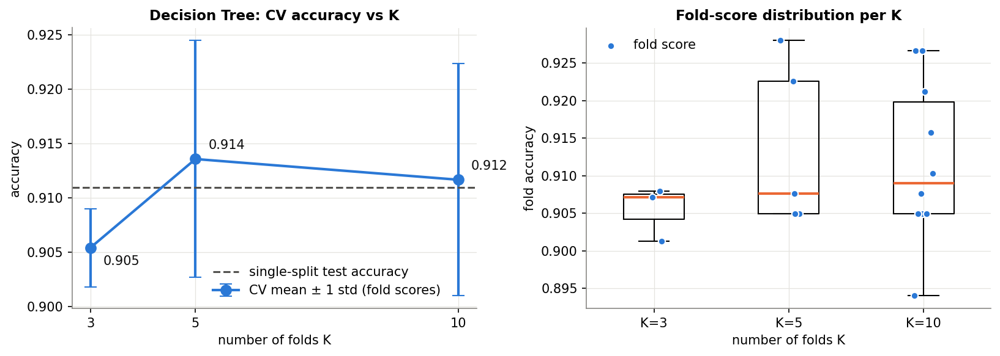
Figure 1 — Left: CV mean ± 1 std vs K, with the single-split test accuracy as a dashed line. Right: distribution of fold scores (figures/t1_cv_accuracy_vs_k.png).
Interpretation (Table 3, Figure 1).
Method. Three selectors, each the first step of a pipeline that ends in the Task 1 Decision Tree, with k ∈ {5, 10, 15, 20, 30, 40, 57} chosen by 5-fold CV: a filter (mutual information, MI, SelectKBest), a wrapper (recursive feature elimination, RFE, with a decision tree) and an embedded method (top-k Random-Forest importances via SelectFromModel).
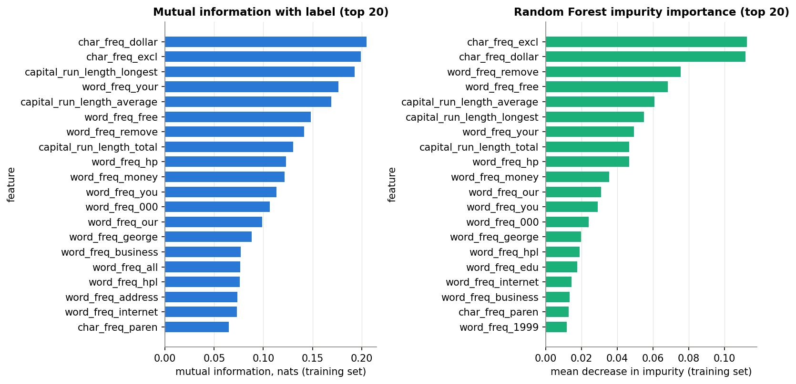
Figure 2 — Mutual information and RF importance, top 20 features, both computed on the training set (figures/t2_feature_scores.png, tables/t2_feature_scores.csv).
Interpretation (Figure 2). The two rankings share all of their top-10 features: char_freq_$, char_freq_!, the three capital-run-length statistics, and your, free, remove, hp, money. Scores fall steeply. Beyond the 20th feature, MI is ≤ 0.059 and RF importance below 1.2%. 19 of the 48 word features are zero in at least 90% of the e-mails (all 4,601).
Selected features (tables/t2_selected_features.csv; each selector fitted on the full training set; "capital runs" = the three capital-run-length statistics; words in italics):
!, $, (, address, all, our, remove, internet, free, business, you, your, 000, money, hp, hpl, george.!, $, (, ;, #, make, all, 3d, our, over, remove, internet, mail, receive, will, report, free, business, email, you, credit, your, font, money, hp, hpl, george, 650, lab, data, technology, 1999, direct, meeting, original, re, edu.!, $, (, our, remove, internet, free, business, you, your, 000, money, hp, hpl, george, 1999, edu.Overlap (tables/t2_overlap_cv_k.csv, tables/t2_overlap_k15.csv):
!, $, ( and free, remove, money, business, internet, our, you, your, hp, hpl, george. RFE's other 23 features are mostly weak, mostly-zero words and symbols (3d, font, meeting, ;, #, …).These are the classical spam markers plus strong ham markers: the corpus comes from HP Labs (hp, hpl), and george is the donor's first name.
Figure 3 — 5-fold CV accuracy vs k, with the all-feature baseline from Task 1; shaded bands = CV mean ± 1 std across the 5 folds (figures/t2_accuracy_vs_k.png, tables/t2_cv_accuracy_vs_k.csv).
| method | CV-selected k | CV acc | test acc | precision | recall | F1 |
|---|---|---|---|---|---|---|
| all features (Task 1, reused) | 57 | 0.9136 | 0.9110 | 0.8828 | 0.8926 | 0.8877 |
| MI (SelectKBest) | 20 | 0.9171 | 0.9099 | 0.8933 | 0.8760 | 0.8846 |
| RFE (Decision Tree) | 40 | 0.9177 | 0.9164 | 0.8907 | 0.8981 | 0.8944 |
| SelectFromModel (RF importance) | 20 | 0.9182 | 0.9229 | 0.9056 | 0.8981 | 0.9018 |
Table 4 — Test results at the CV-selected k (tables/t2_test_results.csv).
Interpretation (Figure 3, Table 4).
Figure 4 shows the explained variance; Table 5 then compares logistic regression on the original features, on PCA components and on MI selection followed by PCA.
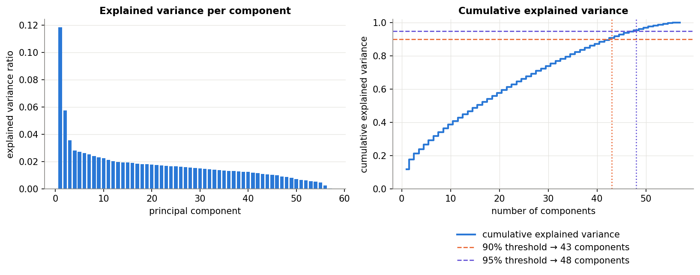
Figure 4 — Explained variance per component and cumulative, with 90% and 95% thresholds; StandardScaler + PCA fitted on the training set only (figures/t3_explained_variance.png, tables/t3_cumulative_variance.csv).
Interpretation (Figure 4). Variance is spread very evenly: PC1 explains 11.8%, 2 PCs 17.6%, 10 PCs 38.7% and 30 PCs 73.9%, and 43 of the 57 components are needed for 90% (48 for 95%). The features are weakly correlated, so PCA cannot compress them much. The first components capture the few correlated groups (top-8 loadings in tables/t3_pca_loadings.csv): PC1 the HP-internal vocabulary (857, 415, telnet, labs, 650, technology), PC2 spam words (your, 000, $, order), PC3 the capital-run statistics.
Comparison. All three set-ups use logistic regression (LR; L2, C=1), which is linear like PCA and needs standardized inputs:
As an extra, the Task 1 Decision Tree is also run on (a) and (b).
| set-up | classifier | dims to classifier | CV acc | test acc | precision | recall | F1 |
|---|---|---|---|---|---|---|---|
| (a) original features | LR | 57 | 0.9228 | 0.9294 | 0.9209 | 0.8981 | 0.9093 |
| (b) PCA, CV-chosen n | LR | 57 | 0.9231 | 0.9294 | 0.9209 | 0.8981 | 0.9093 |
| (b') PCA, 95%-variance rule | LR | 48 | 0.9220 | 0.9273 | 0.9205 | 0.8926 | 0.9063 |
| (c) MI (k=40) → PCA (n=40) | LR | 40 | 0.9155 | 0.9262 | 0.9226 | 0.8871 | 0.9045 |
| extra (a) original | Decision Tree | 57 | 0.9136 | 0.9110 | 0.8828 | 0.8926 | 0.8877 |
| extra (b) PCA | Decision Tree | 30 | 0.8921 | 0.8817 | 0.8508 | 0.8485 | 0.8497 |
Table 5 — Original vs PCA vs selection→PCA (tables/t3_setup_comparison.csv; grid for (c) in tables/t3_fs_pca_grid.csv).

Figure 5 — CV accuracy vs number of components (cumulative variance in brackets; the grid values are evenly spaced on the x-axis, not to scale) for LR and, as an extra, the Decision Tree (figures/t3_accuracy_vs_components.png, tables/t3_cv_accuracy_vs_components.csv).
Interpretation (Table 5, Figure 5).
| component block | variance share | CV accuracy (LR) |
|---|---|---|
| PC1–10 | 38.7% | 0.902 |
| PC11–20 | 19.0% | 0.619 |
| PC21–30 | 16.2% | 0.610 |
| PC31–57 | 26.1% | 0.629 |
Table 6 — LR trained on disjoint blocks of components (tables/t3_variance_vs_accuracy_blocks.csv).
Does high variance guarantee better classification? No (Table 6, Figure 5).
PCA is unsupervised: it ranks directions by spread, not by class separation. On Spambase it never improved accuracy (43–48 components cost LR 0.1–0.6 CV points and the tree about 3), so supervised feature selection (Task 2) is the better reduction here.
We explore the six spending features (Table 7, Figures 6–7), compare K-Means on raw, standardized and log1p data, choose k, then compare feature spaces and profile the clusters.
| feature | mean | median | std | max | skew | skew after log1p |
|---|---|---|---|---|---|---|
| Fresh | 12,000 | 8,504 | 12,647 | 112,151 | 2.56 | −1.58 |
| Milk | 5,796 | 3,627 | 7,380 | 73,498 | 4.05 | −0.22 |
| Grocery | 7,951 | 4,756 | 9,503 | 92,780 | 3.59 | −0.67 |
| Frozen | 3,072 | 1,526 | 4,855 | 60,869 | 5.91 | −0.35 |
| Detergents_Paper | 2,881 | 817 | 4,768 | 40,827 | 3.63 | −0.24 |
| Delicassen | 1,525 | 966 | 2,820 | 47,943 | 11.15 | −1.09 |
Table 7 — Summary statistics of annual spend in m.u. (tables/t4_summary_statistics.csv).
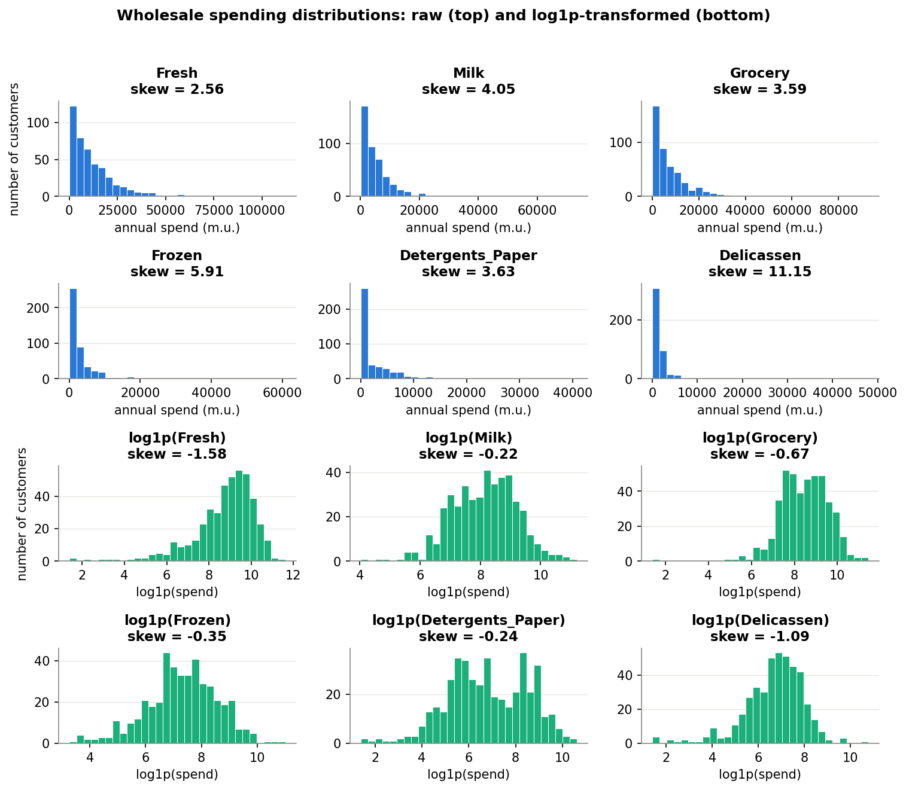
Figure 6 — Raw (top) and log1p (bottom) spending distributions (figures/t4_distributions.png).
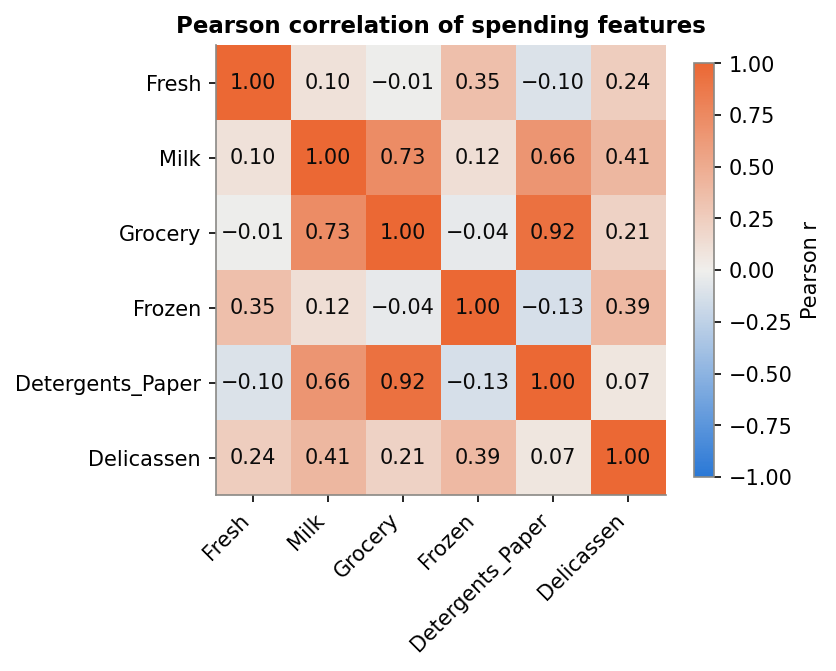
Figure 7 — Pearson correlations of the six spending features (figures/t4_correlation.png, tables/t4_correlation.csv).
Interpretation (Table 7, Figures 6–7).
Raw vs standardized vs log1p at k=3 (Table 7b):
| features | sizes | silhouette (own space) | silhouette (std 6-D) | ARI vs standardized |
|---|---|---|---|---|
| raw | 330/60/50 | 0.478 | 0.411 | 0.49 |
| standardized | 393/45/2 | 0.548 | 0.548 | 1.00 |
| log1p + standardized (extra) | 213/147/80 | 0.259 | 0.142 | 0.08 |
Table 7b — K-Means at k=3 on three feature representations; silhouette in each variant's own space and in the common standardized 6-D space (tables/t4_k3_raw_vs_scaled.csv). ARI = adjusted Rand index (Hubert & Arabie 1985): 1 = identical partitions, ≈ 0 = chance agreement.
On raw features Fresh and Grocery, the largest-scale features, decide the clusters (raw Fresh centroids 8,253 / 35,941 / 8,000). Standardizing weights every feature equally and changes the partition (ARI vs raw 0.49), including a 2-customer cluster of extreme spenders; own-space silhouettes are not comparable, and in the common standardized space the raw partition scores 0.411 against 0.548. log1p (extra) gives balanced clusters but a low silhouette and a different partition (ARI 0.08). At the chosen k=2 the raw partition is unrelated to the standardized one (ARI 0.006, sizes 375/65; tables/t4_chosen_k_raw_vs_scaled.csv).
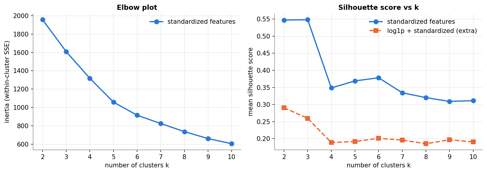
Figure 8 — Elbow (inertia) and silhouette (Rousseeuw 1987) for k = 2…10, standardized features, n_init=10; log1p silhouette as an extra (figures/t4_elbow_silhouette.png).
| k | 2 | 3 | 4 | 5 | 6 | 7 | 8 | 9 | 10 |
|---|---|---|---|---|---|---|---|---|---|
| inertia | 1956 | 1608 | 1318 | 1059 | 916 | 825 | 737 | 661 | 606 |
| silhouette | 0.547 | 0.548 | 0.348 | 0.369 | 0.378 | 0.334 | 0.320 | 0.309 | 0.311 |
| smallest cluster | 51 | 2 | 5 | 1 | 1 | 1 | 1 | 1 | 1 |
Table 8 — K sweep (tables/t4_k_sweep.csv).
Choosing k (Figure 8, Table 8).
The evidence favours k = 2, and on data capped at the 99th percentile silhouette picks it outright (Table 10b). As a tie-breaker we used an explicit rule: take the k with silhouette within 0.01 of the best whose smallest cluster holds at least 5% of customers, which selects k = 2 (clusters 389/51). The rule is post hoc (Section 9) and the 5% threshold is a judgement call, so the capping check tests it. Rejected: k=3 (a two-outlier cluster), k=5–6 (elbow region, but silhouette 0.17–0.18 lower and singleton clusters) and log1p clustering (balanced, but best silhouette 0.29).

Figure 9 — Clusters in PCA(2) space with centroids (✕); chosen k=2 (top) and alternative k=3 (bottom). Colour and marker follow the segment (blue circles = dense cloud, orange squares = retail tail, green triangles = the two outliers); K-Means numbers clusters arbitrarily, so the dense cloud is cluster 0 at k=2 and cluster 1 at k=3. One PC2 unit is drawn about 4× shorter than one PC1 unit (figures/t4_pca_clusters.png).
Interpretation (Figure 9). PC1 (44% of variance) loads on Milk, Grocery and Detergents_Paper, and PC2 (28%) on Fresh, Frozen and Delicassen. With k=2, cluster 1 is the long tail of heavy retail-basket buyers along PC1 and cluster 0 the dense cloud near the origin; the boundary cuts a continuous tail, hence a silhouette of only about 0.55. With k=3 the two extreme points high on PC2 get their own centroid, in empty space between them (one came from each k=2 cluster), and a few retail-tail customers move to the dense cluster (389 → 393, retail tail 51 → 45, plus the 2 outliers).
| features | dims | silhouette (own space) | silhouette (std 6-D) | sizes | smallest/largest size | ARI vs (a) |
|---|---|---|---|---|---|---|
| (a) original 6, standardized | 6 | 0.547 | 0.547 | 389/51 | 0.13 | 1.00 |
| (b) selected 5 (Grocery dropped) | 5 | 0.722 | 0.725 | 424/16 | 0.04 | 0.37 |
| (c) PCA, 2 components | 2 | 0.636 | 0.563 | 395/45 | 0.11 | 0.91 |
| (c) PCA, 3 components (≥80% var) | 3 | 0.578 | 0.547 | 389/51 | 0.13 | 1.00 |
| extra: log1p + standardized | 6 | 0.290 | 0.261 | 252/188 | 0.75 | 0.13 |
Table 9 — Clustering at k=2 in different feature spaces (tables/t4_feature_space_comparison.csv).
Interpretation (Table 9). Selection rule for (b), using only the correlations between the six spending features and no clustering result: while some |r| > 0.7, drop the member of the most-correlated pair with the larger mean |r|. This removed Grocery (any cut-off between 0.67 and 0.92 does), but the tie-break is close (mean |r| 0.382 vs 0.378 for Detergents_Paper) and only this subset was tested, so row (b) describes this subset, not feature selection in general.
| cluster | n (share) | Fresh | Milk | Grocery | Frozen | Det._Paper | Delicassen | total | Horeca / Retail (post-hoc) |
|---|---|---|---|---|---|---|---|---|---|
| 0 | 389 (88%) | 12,157 | 4,028 | 5,403 | 3,066 | 1,668 | 1,257 | 27,579 | 293 / 96 |
| 1 | 51 (12%) | 10,803 | 19,282 | 27,390 | 3,117 | 12,140 | 3,569 | 76,301 | 5 / 46 |
Table 10 — Unscaled per-cluster mean spend in m.u. (tables/t4_cluster_profiles.csv; medians in tables/t4_cluster_medians.csv; Channel crosstab in tables/t4_channel_crosstab_posthoc.csv — Channel was not used for fitting).

Figure 10 — Cluster profiles: colour = standardized mean, text = unscaled mean in m.u. (figures/t4_cluster_profile_heatmap.png).
Interpretation (Table 10, Figure 10).
Difficulties and the effect of scaling and dimensionality reduction. Heavy skew and outliers break K-Means' assumption of compact, similar-sized clusters, and silhouette rewards isolating outliers. Scaling was essential (without it the largest-scale features, Fresh and Grocery, decided the clustering); log1p answers a different question (relative spending pattern rather than volume) and finds weak structure; PCA preserved the clustering, while dropping Grocery changed it substantially.
| version | customers capped | best silhouette (k) | silhouette k=3 | k chosen by the rule | sizes at k=2 | ARI vs chosen partition | Retail share of retail cluster |
|---|---|---|---|---|---|---|---|
| standardized (Table 8) | 0 | 0.548 (3) ≈ 0.547 (2) | 0.548 | 2 | 389/51 | 1.00 | 90% |
| capped at 99th pct., standardized | 19 | 0.463 (2) | 0.395 | 2 | 373/67 | 0.80 | 90% |
Table 10b — Robustness check: K-Means after capping each feature at its 99th percentile (tables/t4_capped_k_sweep.csv, tables/t4_capped_profiles.csv).
Interpretation (Table 10b). With the 19 most extreme customers capped, k=2 wins on silhouette alone (0.463 vs 0.395) with no tiny cluster, so the post-hoc size rule is no longer needed. The segmentation is the same one (ARI 0.80): the retail group grows from 51 to 67 customers and keeps its profile (about 5× Grocery, 7× Detergents_Paper, 90% Retail). The outliers explain most instability (bootstrap ARI 0.56, capped 0.85; tables/x4_bootstrap_stability_capped.csv) and the spurious k=3, not the main result.
Models and search. Decision Tree, Random Forest (Breiman 2001), XGBoost (Chen & Guestrin 2016), Gradient Boosting (Friedman 2001) and AdaBoost (SAMME, Zhu et al. 2009) with stumps as a fixed base learner, all tuned by GridSearchCV with 5-fold stratified CV on the training set (full grids in tables/t5_search_decision_tree.csv, tables/t5_search_random_forest.csv, tables/t5_search_xgboost.csv, tables/t5_search_gradient_boosting.csv and tables/t5_search_adaboost.csv).
| model | grid | best setting | CV acc | CV std | CV train acc |
|---|---|---|---|---|---|
| Decision Tree | max_depth ∈ {2,3,4,5,6,8,10,12,15,20,None} | max_depth=12 | 0.9226 | 0.008 | 0.9758 |
| Random Forest | n_estimators ∈ {100,300,500} × max_depth ∈ {5,10,20,None} | 300 trees, no depth limit | 0.9527 | 0.005 | 0.9998 |
| XGBoost | n_estimators ∈ {100,300,500} × lr ∈ {0.01,0.05,0.1,0.3} × max_depth ∈ {3,5,7} | 300 trees, lr 0.1, depth 7 | 0.9576 | 0.009 | 0.9995 |
| Gradient Boosting | n_estimators ∈ {100,300} × lr ∈ {0.05,0.1} × max_depth ∈ {3,5} | 300 trees, lr 0.1, depth 5 | 0.9549 | 0.007 | 0.9991 |
| AdaBoost (stumps) | n_estimators ∈ {100,300,500} × lr ∈ {0.5,1.0} | 300 stumps, lr 1.0 | 0.9424 | 0.005 | 0.9526 |
Table 11 — Hyper-parameter search results (tables/t5_best_params.csv); CV std from GridSearchCV (ddof = 0).
Interpretation (Table 11). The tree's depths 10, 12 and 15 are within 0.002 in CV (0.9212–0.9226), while depths 2–3 under-fit (0.87–0.89). Random Forest works best with unlimited depth (depth 5 under-fits, 0.93), and the number of trees barely matters. XGBoost's three worst settings (lr 0.01 with 100 trees, CV 0.915–0.930) are under-trained, and its top three lie within 0.00054 (0.9571–0.9576).
| rival (its grid size) | rival best CV | XGBoost best CV, same budget (median [5th pct.]) | XGBoost ahead |
|---|---|---|---|
| Random Forest (12) | 0.9527 | 0.9573 [0.9562] | 100% |
| Gradient Boosting (8) | 0.9549 | 0.9571 [0.9554] | 96% |
| AdaBoost (6) | 0.9424 | 0.9571 [0.9541] | 100% |
Table 11b — Equal-budget check: best CV score of 2,000 random subsets of XGBoost's 36-setting grid, each the size of the rival's grid; stored CV scores only, no refits (tables/t5_budget_matched.csv).
Interpretation (Table 11b). With as many settings as each rival, XGBoost still leads in 96–100% of draws, so its lead is not an artefact of grid size, but it does depend on grid range: on Gradient Boosting's 8 settings XGBoost's best CV is 0.9533, below Gradient Boosting's 0.9549 (tables/t5_search_xgboost.csv). All 11 XGBoost settings above 0.9549 use depth 7, lr 0.3 or 500 trees, which Gradient Boosting was not offered, and Gradient Boosting's best setting sits on the upper edge of all three of its ranges (as does XGBoost's depth 7). Appendix A.5 moves each of these parameters past its edge.
| model | CV acc | test acc | precision | recall | F1 | FP | FN |
|---|---|---|---|---|---|---|---|
| Decision Tree (depth 12) | 0.9226 | 0.9197 | 0.9070 | 0.8871 | 0.8969 | 33 | 41 |
| Random Forest | 0.9527 | 0.9457 | 0.9510 | 0.9091 | 0.9296 | 17 | 33 |
| XGBoost | 0.9576 | 0.9468 | 0.9337 | 0.9311 | 0.9324 | 24 | 25 |
| Gradient Boosting | 0.9549 | 0.9457 | 0.9335 | 0.9284 | 0.9309 | 24 | 26 |
| AdaBoost (stumps) | 0.9424 | 0.9294 | 0.9209 | 0.8981 | 0.9093 | 28 | 37 |
Table 12 — Test-set metrics of the CV-selected models (tables/t5_test_metrics.csv); FP/FN from the confusion matrices. AdaBoost's row equals Task 3's logistic regression (a) in Table 5 by coincidence: both make 28 false positives and 37 false negatives.

Figure 11 — Test-set confusion matrices of the five tuned models, 2 × 3 grid with the last panel empty; rows = true class, columns = predicted class (figures/t5_confusion_matrices.png).
Interpretation (Table 12, Figure 11).
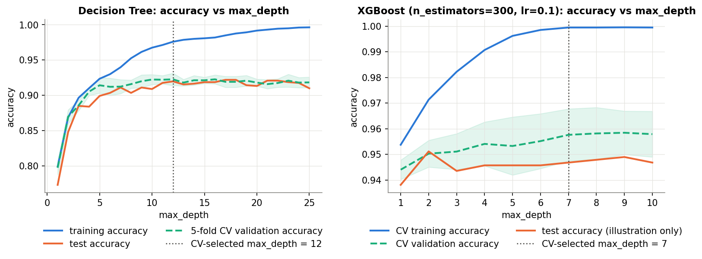
Figure 12 — Complexity curves: Decision Tree train/test/CV accuracy vs max_depth (left); XGBoost CV train/validation accuracy vs max_depth plus, as an illustration not used for selection, the test accuracy of one full-training-set fit per depth (right); bands = CV validation mean ± 1 std over the 5 folds (figures/t5_complexity_curves.png, tables/t5_complexity_decision_tree.csv, tables/t5_complexity_xgboost.csv with the test_acc column).
Interpretation (Figure 12). Over-fitting here means validation accuracy falling as complexity grows; a train–test gap alone is not the criterion.
| model | variant | CV-chosen setting | CV acc | test acc | F1 |
|---|---|---|---|---|---|
| Random Forest | baseline | – | 0.9527 | 0.9457 | 0.9296 |
| Random Forest | (a) MI selection | k=40 | 0.9514 | 0.9446 | 0.9285 |
| Random Forest | (b) PCA | n=40 | 0.9323 | 0.9164 | 0.8923 |
| XGBoost | baseline | – | 0.9576 | 0.9468 | 0.9324 |
| XGBoost | (a) MI selection | k=40 | 0.9549 | 0.9479 | 0.9335 |
| XGBoost | (b) PCA | n=30 | 0.9383 | 0.9240 | 0.9033 |
Table 13 — Random Forest and XGBoost with feature selection or PCA inside the pipeline (tables/t5_fs_pca_comparison.csv). Grids: k ∈ {10, 20, 30, 40}, n ∈ {10, 20, 30, 40}; hyper-parameters reused from Table 11, not retuned (Appendix A.5 retunes max_depth with PCA and an RF-importance selector).
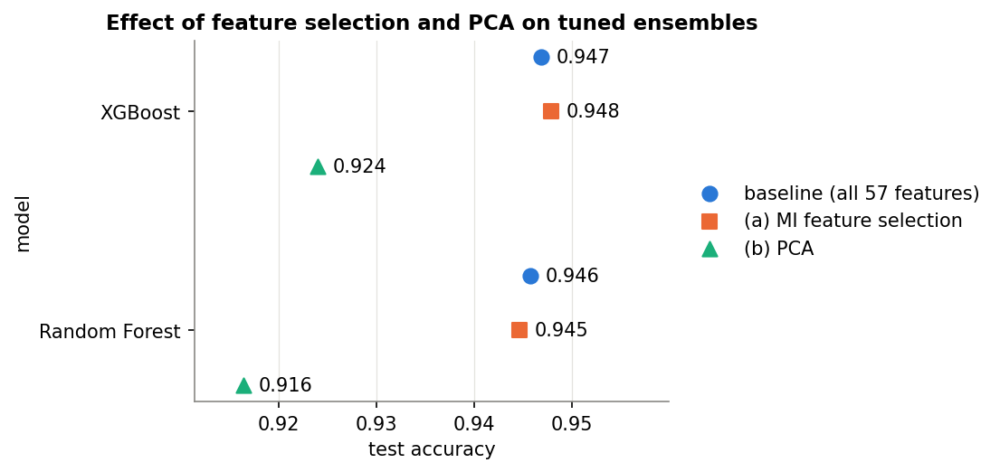
Figure 13 — Test accuracy, baseline vs feature selection vs PCA, as a dot plot with each value labelled (figures/t5_fs_pca_comparison.png).
Interpretation (Table 13, Figure 13).
Why the models differ.
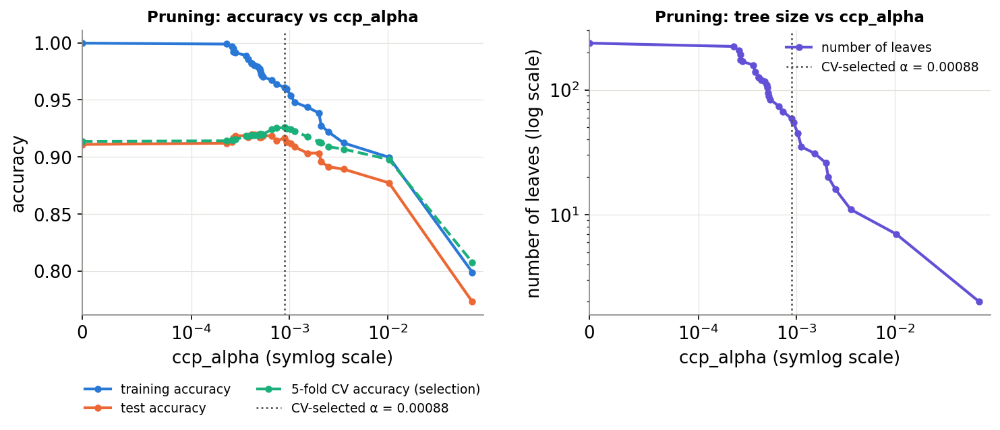
Figure 14 — Cost-complexity pruning: accuracy (left) and number of leaves (right) vs ccp_alpha (figures/t5_ccp_pruning.png, tables/t5_ccp_alpha.csv).
| tree | leaves | test acc | F1 |
|---|---|---|---|
| unpruned (Task 1 baseline, reused) | 237 | 0.9110 | 0.8877 |
| max_depth = 12 (from the search above, reused) | 120 | 0.9197 | 0.8969 |
| ccp_alpha = 0.00088 (CV-best) | 59 | 0.9164 | 0.8926 |
| ccp_alpha = 0.00112 (1-SE rule, extra) | 35 | 0.9088 | 0.8814 |
Table 14 — Pruning summary (tables/t5_pruning_summary.csv).
Pruning (Figure 14, Table 14). The training-set pruning path has 106 distinct α values (without the last, which prunes to the root); we evaluated 30 evenly spaced quantiles of it, starting at α = 0.
char_freq_[. Fix: load_spambase renames the six symbol features (e.g. char_freq_dollar).requirements.txt, constraints.txt; README).Reused results. One split serves Tasks 1, 2, 3 and 5. The Task 1 all-feature tree is the baseline of Figure 3, Tables 4–5 and the pruning path (α = 0); Task 2's seeded MI scorer is reused in Task 3 (c) and Table 13; Task 4's matrices and chosen k feed Table 9, and its k rule and k=2 partition (the ARI reference) the capping check; the tuned Task 5 settings feed Figure 12, Tables 13–14 and the equal-budget check (stored CV scores, no refits). Appendix A reuses the fitted Task 5 models, the Task 2 rankings and the Task 4 data and k; Figure 0 re-plots Tasks 1–5.
Verification.
fit/fit_transform call on Spambase uses X_train or runs inside a CV-evaluated Pipeline. The test set is never passed to fit; besides predictions and scores it appears only in descriptive summaries (Table 1, Section 2's duplicate count, A.5's copy flag) and in two Appendix A analyses that fit nothing (A.2's error-analysis means, A.3's permutation importance).figures/ appear in the notebook and in this report with an interpretation, and every one of the 67 CSVs in tables/ is interpreted in the notebook and referenced in this report.$, !, capital runs, free/remove, the ham markers hp/george) are enough; at their CV-selected k the three selectors differ by less than one fold-std in CV (no significance test was run), and univariate MI is clearly weaker only at k ≤ 10.These checks go beyond the tasks. They use the same split and the fitted Task 5 models, and every choice is still made on training data. A.1–A.4 correspond to the notebook sections X1–X4, A.5 to section R; Figure 0 is X5.
Paired bootstrap confidence intervals (Efron & Tibshirani 1993), exact McNemar tests with Holm correction and nested CV test whether the Task 5 differences exceed test-set noise.

Figure 15 — Test accuracy and F1 with 95% paired-bootstrap CIs, 2,000 resamples (figures/x1_bootstrap_ci.png, tables/x1_bootstrap_ci.csv).
| comparison | accuracy difference [95% CI] | McNemar: XGBoost right & other wrong vs XGBoost wrong & other right | Holm p |
|---|---|---|---|
| XGBoost − Decision Tree | +0.027 [+0.011, +0.045] | 43 vs 18 | 0.017 |
| XGBoost − AdaBoost (stumps) | +0.017 [+0.005, +0.029] | 24 vs 8 | 0.049 |
| XGBoost − Random Forest | +0.001 [−0.010, +0.011] | 12 vs 11 | 1.000 |
| XGBoost − Gradient Boosting | +0.001 [−0.008, +0.010] | 9 vs 8 | 1.000 |
Table 15 — Paired bootstrap differences and exact McNemar tests (McNemar 1947) with Holm correction (Holm 1979) (tables/x1_bootstrap_accuracy_difference.csv, tables/x1_mcnemar.csv; all 10 pairs in the CSV).
| model | non-nested CV | nested CV (mean ± std) | optimism | test accuracy |
|---|---|---|---|---|
| Decision Tree | 0.9226 | 0.9215 ± 0.010 | +0.0011 | 0.9197 |
| Random Forest | 0.9527 | 0.9500 ± 0.006 | +0.0027 | 0.9457 |
| XGBoost | 0.9576 | 0.9524 ± 0.011 | +0.0052 | 0.9468 |
Table 16 — Nested 5×5 cross-validation on the training set (tables/x1_nested_cv.csv).
Interpretation (Figure 15, Tables 15–16).

Figure 16 — ROC and precision–recall curves on the test set (figures/x2_roc_pr_curves.png, tables/x2_auc.csv).
Interpretation (Figure 16). The ensembles rank e-mails almost perfectly (ROC AUC 0.979–0.987, average precision 0.968–0.979). The Decision Tree (AUC 0.902) outputs only a few distinct leaf probabilities, so its best precision at 90% recall or more is only 0.42. The precision–recall curves are drawn as steps between operating points (the convention behind average precision), so the tree's few thresholds show as a few flat steps.

Figure 17 — Out-of-fold training cost vs decision threshold (false positive = 10, false negative = 1); black-edged marks = chosen thresholds (the small marks only tell the lines apart; XGBoost's chosen triangle (0.95) sits partly under Gradient Boosting's diamond (0.94)). The y-axis is cut above the chosen costs, so the Random Forest and AdaBoost curves leave the plot at low thresholds (figures/x2_cost_vs_threshold.png).
| model | threshold (chosen on training OOF) | test FP | test FN | cost per 1,000 e-mails | test accuracy |
|---|---|---|---|---|---|
| XGBoost | 0.50 (default) | 24 | 25 | 288 | 0.947 |
| XGBoost | 0.95 | 4 | 58 | 106 | 0.933 |
| Random Forest | 0.74 | 4 | 65 | 114 | 0.925 |
Table 17 — Cost-sensitive thresholds (tables/x2_cost_threshold.csv; all five models in the CSV).
Interpretation (Figure 17, Table 17). Losing a real e-mail is worse than seeing a spam, so a false positive is assumed to cost 10 false negatives (an assumption; the ratio was not varied). Choosing the threshold on out-of-fold training predictions cuts XGBoost's false alarms from 24 to 4 of 558 legitimate e-mails and its cost by 63%, although accuracy drops 1.4 points. Accuracy treats both errors as equal, so it is the wrong metric for this decision. The Decision Tree's default row in tables/x2_cost_threshold.csv has 34 false positives, one more than Table 12, because one legitimate test e-mail sits in a leaf with P(spam) exactly 0.5 (predict() says ham, the rule P(spam) ≥ 0.5 says spam).
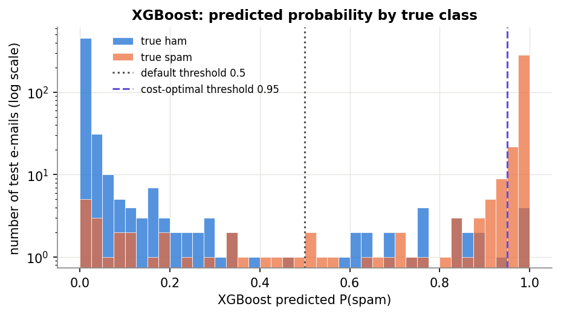
Figure 18 — XGBoost test probabilities by true class, log scale; where both classes fall in a bin the bars overlap (brown) (figures/x2_probability_histogram.png; feature profile of each confusion cell in tables/x2_error_analysis.csv).
Error analysis (Figure 18). The profile uses XGBoost's own eight most important features (built-in importance of its training fit), then the rest of Task 2's RF top 8. Most e-mails sit at the two ends of the probability scale. Of the 25 missed spam e-mails, 17 get P(spam) below 0.25 (11 below 0.1; tables/x2_errors_by_probability_band.csv), so most are not borderline: they are "quiet", with 11× fewer $, almost no remove and short capital runs, and they carry ham markers (edu 0.32 vs 0.01, hp 0.093 vs 0.005; mean P(spam) 0.18). False alarms are ham that sounds like spam: 7× more ! and 8× more free than normal ham (mean P(spam) 0.80); the 4 ham e-mails at or above 0.95 are the false positives left at the cost-optimal threshold (Table 17; tables/x2_errors_by_probability_band.csv). This suggests that fixing these errors needs new information (headers, sender, full text) more than a better model (only XGBoost's errors were profiled).
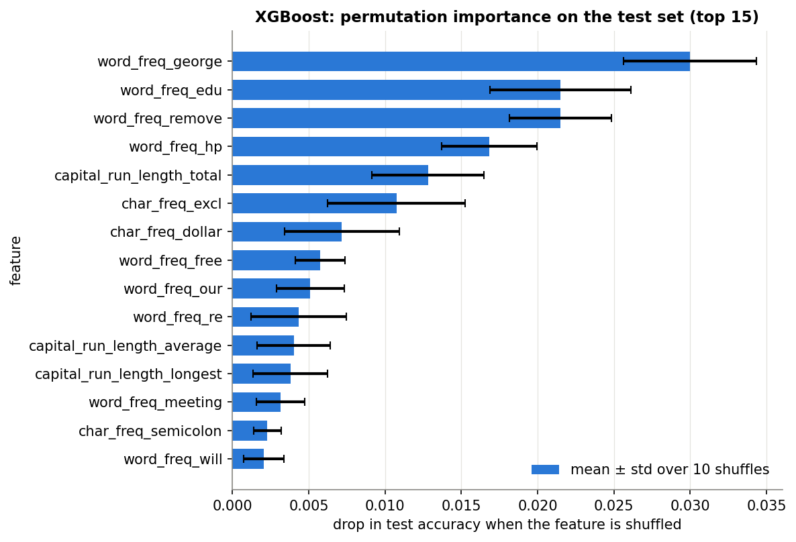
Figure 19 — XGBoost permutation importance on the test set, 10 repeats (figures/x3_permutation_importance.png, tables/x3_permutation_importance.csv).
Interpretation (Figure 19). Three of the four most important features are ham markers: george (−3.0 accuracy points when shuffled), edu (−2.1) and hp (−1.7); only remove (−2.1) is a spam marker. $ and ! flag most spam, and the ham markers suggest that the model resolves the remaining hard cases with the mailbox owner's personal vocabulary. The classifier is partly personalized to one mailbox, a dataset-shift risk the test score (same mailbox) cannot reveal; the dataset's donors already note that george marks non-spam and suits a personalized filter (Hopkins et al. 1999). Shuffling one feature of a correlated group such as hp, hpl, 650, labs, 857, 415, telnet understates the importance of the group as a whole. Refitting the tuned models without the six mailbox-specific words (george and the area code 650, which UCI's notes name as signs of the donor's own mail, and hp, hpl, lab, labs, which name the donor's employer; edu is not on the list; tables/x3_mailbox_words_removed.csv) costs 0.95 CV points for RF and 1.55 for XGBoost; on the test set RF loses 0.98 points and XGBoost none.

Figure 20 — Partial dependence of P(spam) on the four most important features by test-set permutation importance (Figure 19); black ticks on the x-axes mark the training-set deciles (figures/x3_partial_dependence.png).
Interpretation (Figure 20). All four effects are non-linear, saturating and nearly monotone (the smallest non-zero george frequency on the plot's grid drops the average P(spam) from 0.40 to 0.22; remove raises it to about 0.57). The exceptions are two small bumps: edu rises slightly just before its drop near frequency 1.6%, and remove falls back slightly at the top of its range. Trees represent such steps naturally; the linear model of Task 3 cannot on untransformed inputs, which may be part of why it scores lower (0.929 vs 0.947; not tested).
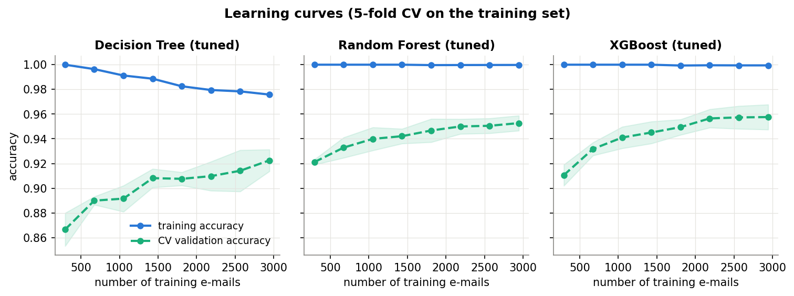
Figure 21 — Learning curves, 5-fold CV on the training set; shaded band = CV validation mean ± 1 std across the 5 folds (figures/x3_learning_curves.png, tables/x3_learning_curves.csv).
Interpretation (Figure 21). The single tree is still improving at full size (0.867 → 0.923), while XGBoost and RF flatten after about 2,000 e-mails: for the ensembles, more e-mails of the same kind would add little, consistent with a limit set by the 57 features or by label noise.

Figure 22 — Bootstrap stability of K-Means (left) and the gap statistic (right), standardized Wholesale data; left band = mean ARI ± 1 std over the 50 bootstrap refits, capped at 1 (figures/x4_stability_and_gap.png, tables/x4_bootstrap_stability.csv, tables/x4_gap_statistic.csv).
Interpretation (Figure 22). These checks are less flattering, and we report them as they are.
Notebook section R repeats parts of Task 5 under changed conditions. It runs after everything else, so no number above changes; every choice is still made by 5-fold CV on the training set, and the test set only scores.
| search | model | settings | CV-chosen setting | CV acc | test acc | still on an edge |
|---|---|---|---|---|---|---|
| Table 11 grid | Gradient Boosting | 8 | 300 trees, lr 0.1, depth 5 | 0.9549 | 0.9457 | all three |
| + steps past its edges | Gradient Boosting | 12 | 500 trees | 0.9579 | 0.9457 | none (lr, depth not varied) |
| Table 11 grid | XGBoost | 36 | 300 trees, lr 0.1, depth 7 | 0.9576 | 0.9468 | depth |
| + depth 9, 11 | XGBoost | 38 | depth 9 | 0.9584 | 0.9490 | none (trees, lr not varied) |
| Table 11 grid | AdaBoost | 6 | 300 stumps, lr 1.0 | 0.9424 | 0.9294 | lr |
| + lr 1.5, 2.0 | AdaBoost | 8 | lr 1.5 | 0.9429 | 0.9414 | none (trees not varied) |
| Table 11 grid + base-tree depth 2–5 | AdaBoost | 10 | depth 5 | 0.9579 | 0.9457 | depth (lr, trees not varied) |
| RF-importance selection, k ∈ {40, 57} | Random Forest | 4 | k = 57, no depth limit | 0.9527 | 0.9457 | none |
| PCA, n ∈ {43, 48, 57} | Random Forest | 6 | n = 48, no depth limit | 0.9329 | 0.9240 | none |
| no selection or PCA | XGBoost | 4 | depth 9 | 0.9584 | 0.9490 | none |
| RF-importance selection, k ∈ {40, 57} | XGBoost | 8 | k = 40, depth 11 | 0.9592 | 0.9457 | k, depth |
| PCA, n ∈ {43, 48, 57} | XGBoost | 12 | n = 57, depth 5 | 0.9427 | 0.9229 | depth |
Table 18 — Robustness checks of the Task 5 tuning: the CV-chosen setting of each search and its parameters still at the smallest or largest value tried (57 features and no depth limit cannot be exceeded and do not count); "not varied" = tried at one value only at that setting, so its edge status is unknown; the last five rows search only max_depth and k or n, with the other parameters at Table 11's values (not varied) (tables/r_grid_edges.csv, tables/r_adaboost_base_depth.csv, tables/r_fs_pca_retuned.csv).
StratifiedGroupKFold) lowers XGBoost's CV accuracy from 0.9576 to 0.9557, a fifth of a fold std, so copies across folds barely inflate XGBoost's CV estimate (the other models were not re-scored this way).Two readings that Tables 12 and 15 invite do not survive these checks, and Sections 8 and A.1 already take both into account: that XGBoost's lead over AdaBoost is significant (it rests on five duplicated test e-mails) and that AdaBoost is weak as a model (the weakness belongs to its fixed stumps). The other Task 5 conclusions hold.